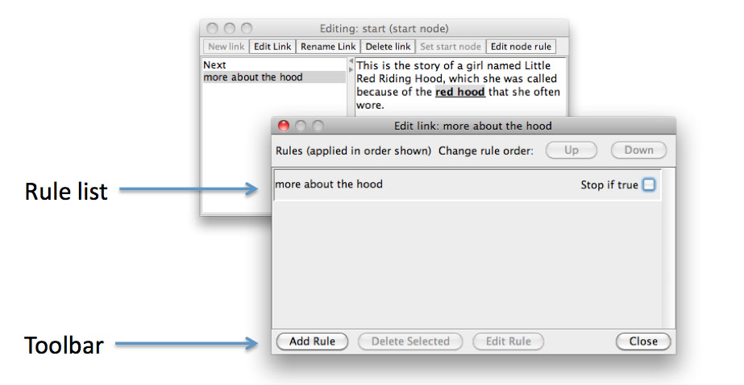
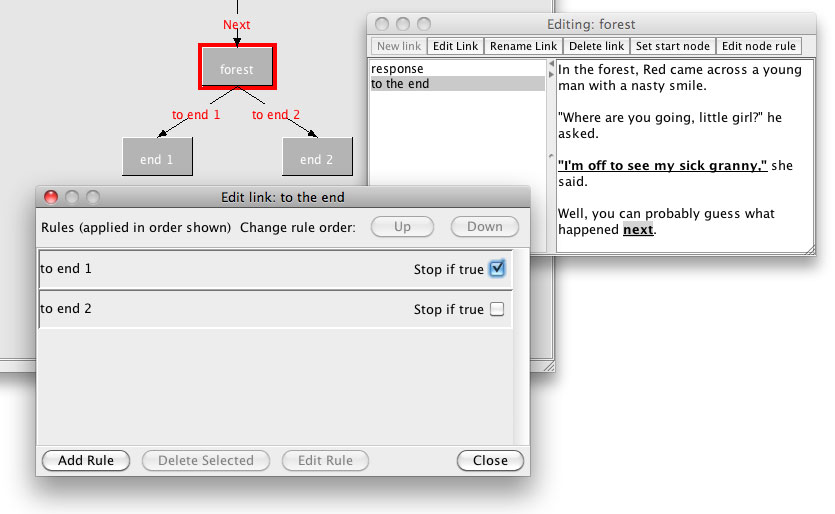

Link editor
The link editor displays the list of link rules which are associated with a particular link. Rules are evaluated in order, and evaluation stops based on whether or not the stop if true checkbox is checked.
A rule can be selected by clicking on the rule, and unselected by either selecting another rule, or clicking again on the currently selected rule. The currently selected rule can be moved up or down in the rule list using the Up and Down buttons.

Rules can be added to a link by clicking on the Add Rule button in the toolbar. The new rule will be added after the currently selected rule, or at the end of the list if no rule is currently selected. The currently selected rule can be deleted by clicking on the Delete Selected button.
The currently selected rule can be edited by clicking on the Edit Rule button, or by double-clicking on the rule. This will open the rule editor.
Links which are displayed on the map view in the main window based on the Follow link to actions in the link's rules, and are labelled with the name of the rules associated with the link.
